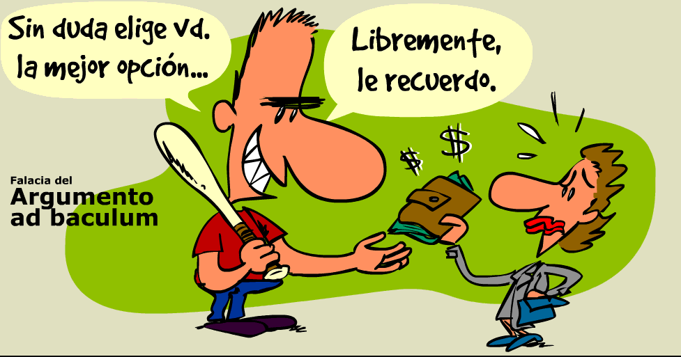

Quina de les seguents opcions defineix millor la falacia Ad Baculum?
La por, substitueix les premisses en què pogués basar-se la conclusió. Qui argumenta així pretén no només forçar l'interlocutor a acceptar el seu punt de vista. Habitualment s'utilitza tot advertint de les consequencies que tindria el fet de rebutjar allò que diem. Aquest recurs té sovint una gran força de convicció.
La ira, altera les condicions que sostenen la conclusió. Qui utilitza aquest argument no només vol convèncer l'altra persona del seu punt de vista. Sovint, s'acompanya d'una advertència sobre les repercussions de rebutjar la posició proposada, donant-li així una força persuasiva destacada.
La manipulació emocional, desvirtua les bases en què es fonamenta la conclusió. La intenció és més que persuadir l'altre a acceptar una visió específica. És freqüent incloure advertències sobre les conseqüències negatives de rebutjar l'argument presentat, la qual cosa pot exercir una gran influència persuasiva.
L'engany, desfigura les premisses que donen suport a la conclusió. Qui empra aquest mètode no només vol imposar la seva opinió a l'altra persona. És comú que es facin advertències sobre les conseqüències de rebutjar el que s'està dient, donant així una gran força de convicció a l'argument.
Good job!
You clicked the button!
OK